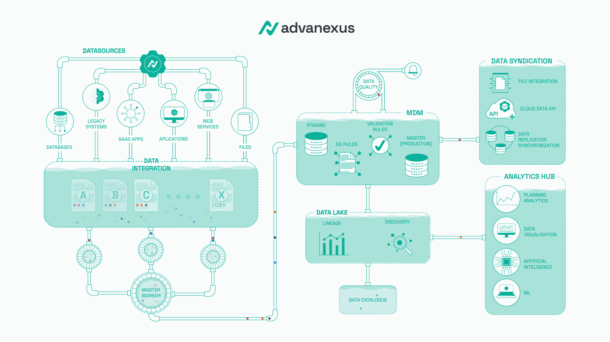

Operating system for controlled data execution

Target investment: €2.4M
to unify the platform, integrate the C++ execution core, introduce the ACI layer, and prepare for expansion into the EU and U.S. markets
Delivery plan: 12 months
Total funding period: 15 months
| Fragmented operations | Business consequences |
|---|---|
| Multiple tools, teams, and partial controls | Slower onboarding and slower change delivery |
| Unclear accountability over data and rules | Higher operational and regulatory risk |
| Manual and slow change review | Higher likelihood of error |
| Incidents require additional manual analysis | Slower response and greater pressure |
| Audit readiness is built retroactively | Greater audit stress and weaker defensibility |
| AI and analytics run on insufficiently controlled data | Lower trust in outputs and slower business value |

Systems and cloud sources → advanexus → controlled and provable delivery to reporting, analytics, and AI
advanexus does not replace existing systems; it introduces control over how data is executed, validated, and delivered.
| Category | Examples | Where it overlaps | Where advanexus is different |
|---|---|---|---|
| Large data and enterprise platforms | Databricks, Snowflake, SAP, Oracle | Data, governance, integrations, analytics | It is not a replacement for the full platform; it provides execution control, rules during operation, controlled delivery, and provability above the existing environment |
| Orchestration and execution management tools | Dagster, Prefect | Workflows, execution management, operational coordination | It is not focused only on orchestration; it provides accountability, repeatability, approval, and evidence across the full operational process |
| Data governance and trusted data layer | Collibra, Informatica, Qlik Talend | Governance, lineage, quality, trusted data | It is not focused only on cataloging and governance; it provides control over how the flow is actually executed, validated, and delivered |
| Observability and operational insight layer | Monte Carlo, Palantir Foundry | Visibility, operational context, reliability | It is not focused only on monitoring or business-layer modeling; it provides controlled delivery and evidence through the flow itself |
advanexus is not just another data platform.
advanexus is an operational layer for controlled data execution, above and between existing systems.
| Area | Focus |
|---|---|
| Initial market | Tier 2 and Tier 3 banks, regulated fintech companies, insurance organizations, and teams with high compliance requirements, as well as individual teams within larger banks with clearly bounded workflows |
| Initial sales strategy | The entry point is not as a replacement for the central platform in Tier 1 banks, but through a clearly bounded high-value problem with lower organizational risk |
| First application scenarios | AML, fraud detection, compliance workflows, controlled reporting pipelines, audit-sensitive data movement, reconciliations, and operational handoffs between teams |
| Reference-building strategy | 2 pilot clients, 1 to 2 partner-led implementations, and references from controlled use cases before expanding to a broader scope |
| Reason for this approach | The problem is critical enough for the buyer to see value, while the entry point remains bounded enough for the risk to stay acceptable |
| Expected outcome | Faster proof of value, first serious references, lower entry risk, and a gradual path toward larger institutional clients |
| What already exists today | What the investment unlocks |
|---|---|
| A functional platform foundation | A unified platform |
| Core product model: sources, jobs and tasks, checks and rules, datasets, delivery, and audit evidence | An integrated C++ execution core |
| A controlled workflow model | ACI as an intelligent control layer |
| Provability of execution and rules during operation | Infrastructure stabilization and scalability |
| The ability to demonstrate the product through a PoC and pilot scenario | A pilot-ready enterprise package for serious market entry |
This is not an investment in an idea from zero.
This is an investment in unifying, strengthening, and commercially preparing an existing product.
| Phase | What is built | Result |
|---|---|---|
| Phase 1. New infrastructure | Deployment model, CI/CD, system observability, and initial security baseline | A stable and production-ready platform foundation |
| Phase 2. Platform unification | Convergence of the base and controlled versions, one development path, one domain model, and a unified API and UI direction | One platform instead of multiple development tracks |
| Phase 3. C++ core integration | Execution core, lifecycle management, status, failures, and evidence binding | A unified execution engine inside the platform |
| Phase 4. ACI foundation | Flow formalization, change and risk review, incident summary, audit draft, and trusted dataset summary | An intelligent control layer within the platform |
| Phase 5. Final hardening and pilot readiness | Security, performance, deployment runbooks, and a pilot package | A product ready for a serious pilot and client-facing deployment |
The initial investment funds a clear plan with a defined sequence, scope, and outcome.
It does not fund open-ended development without clear boundaries.
| Area | What ACI is | What ACI brings |
|---|---|---|
| Role | An embedded intelligent control layer inside advanexus | Accelerates work within an already controlled system |
| Constraint | It is not a chatbot, not a generic assistant, and not an autonomous agent | It does not introduce additional operational or regulatory chaos |
| Mode of operation | It works only on existing platform objects and their context | Everything remains tied to rules, lineage, accountability, evidence, and approval |
| Initial functions | Flow formalization, change and risk review, incident summary, audit draft, trusted dataset summary | Reduces manual work and accelerates the most expensive operational steps |
| Operational value | Helps teams understand faster what needs to be formalized, what changed, what is risky, and what happened | Shorter onboarding, faster change review, faster incident response, and faster audit preparation |
| Commercial value | Strengthens the existing product instead of shifting the story toward generic AI | Creates a clearer proof of value for the buyer and stronger product differentiation |
advanexus introduces intelligence only after execution, rules, accountability, and provability are already under control.
| Area | Approach | Expected outcome |
|---|---|---|
| Entry model | advanexus is introduced through a clearly bounded high-value use case, not through a large-scale replacement of the existing environment | Lower entry risk and a faster start to the engagement |
| Implementation steps | 1. discovery and scope definition 2. controlled pilot 3. gradual move into production operation | A clearly defined path from the first problem to the first production value |
| Time to the first solution draft | 2 to 4 weeks to define the initial scope and produce a usable flow draft | Faster decision-making and a faster start to the pilot phase |
| Time to the first controlled scenario | 6 to 10 weeks to the first high-value controlled scenario | Early proof of value without major organizational disruption |
| Time to the first production scope | 12 to 16 weeks to a gradual move into production for the first scope | A shorter path to real business impact |
| Impact on the team and organization | Adoption happens around existing flows, without mass replacement of personnel and without reshaping the organization | Lower risk to team efficiency and lower adoption cost |
| Measurable operational value | In pilot validation, the goal is a faster transition from process description to flow draft, faster change review, faster incident summary, and faster audit preparation | 40%+ faster flow draft, 30%+ faster change review, 50%+ faster incident summary, and 40%+ faster audit draft preparation* |
advanexus reduces adoption risk by introducing a control layer around existing flows and shortening the path to the first provable value.
| Area | Approach | What it means in practice |
|---|---|---|
| Market entry | Initial market entry is not based on the claim that all certifications are already completed | Entry starts through a clearly bounded use case, controlled rollout, and gradual trust-building |
| Regulatory approach | A phased compliance model is applied | A security baseline exists from the start, while formal strengthening of controls follows expansion toward more demanding clients |
| Environment for early clients | Where needed, partner-hosted or compliant execution environments are used | This lowers the regulatory threshold for early implementations and accelerates the path to reference clients |
| Provability and traceability | Activity trails and evidence are built into the operating model itself | Audit readiness is not created retroactively, but through the operational flow |
| Contracting model | Contracts are tied to a clearly defined scope of engagement | Responsibilities are defined upfront and aligned with the rollout phase |
| Legal protection | Liability caps, professional indemnity insurance, and cyber insurance | Risk is contractually and financially controlled, without taking on the role of the system of record in the initial phase |
Regulatory and legal risk is not ignored; market entry is structured so that it remains technically, operationally, and contractually under control.
| Area | Approach | What it means in practice |
|---|---|---|
| Market positioning | advanexus is not positioned as a replacement for an infinitely scalable data storage platform | The focus is on controlled execution and provability for clearly defined operational scopes |
| Scalability foundation | New infrastructure, separate execution profiles, an integrated C++ execution core, workload isolation, system observability, and recovery | Scalability is achieved through deliberate design, not through unverified claims |
| Operational framework | Every rollout has a clearly defined execution envelope | Ingest volume, dataset size, concurrency, and target service levels are defined for each specific use case |
| Technical assurance | Performance and limits are measured per scenario rather than assumed in advance | Buyers and investors receive a clear technical profile for both the pilot and production scope |
| What the initial investment delivers | A formal benchmark package and a published performance envelope for pilot and enterprise sales | Technical capacity becomes measurable, comparable, and commercially usable |
advanexus does not sell unverified claims of infinite scale.
advanexus sells controlled and measured operational capacity for clearly defined scenarios.
| Area | Structure | Economic rationale |
|---|---|---|
| Layer 1. Initial package | Paid package for problem discovery and proof of concept: €30k to €80k | Enables entry into the client account with limited risk and early funding of the initial engagement |
| Layer 2. Annual subscription for the first production scope | Annual subscription for a clearly bounded production scope: €120k to €300k annually | Converts the pilot and initial engagement into recurring revenue |
| Layer 3. Expansion across multiple domains | Expansion across additional flows, teams, or business domains: €300k to €700k+ annually | Increases value per client without proportional growth in delivery cost |
| Layer 4. Higher-value additional services | Premium support, compliance, guided enablement, and expansion support | Creates additional revenue and strengthens client retention |
| Customer acquisition cost | Target blended customer acquisition cost in the early phase: €50k to €90k | Maintains sales discipline and measures how efficiently the initial engagement converts into subscription and expansion |
| Payback period | Target: under 18 months for a premium client and under 12 months for expansion within an existing client | Shows that the model does not depend on an excessively long wait for sales payback |
| Path to sustainability | Target break-even at around €2.3M to €2.6M in annual revenue | In practical terms, this means 8 to 10 premium clients or 5 to 6 larger clients with a mix of initial packages, production scopes, and expansions |
| Financial planning | A pro forma cash flow model exists for the initial investment period and a 24-month exit scenario | The investment is based on a planned transition from early revenue to sustainable growth |
advanexus does not build revenue only through technical implementation, but through a clear progression from the initial engagement to annual and expanded revenue with sustainable economic logic.
| Area | Approach | What it means in practice |
|---|---|---|
| Route to market | Sales does not rely on a single salesperson, but on three channels: founder-led selling in the early phase, partner-led access for regulated clients, and expansion through early reference clients | The sales model follows how an enterprise buyer actually makes a decision |
| Sales motion | Entry through a clearly defined use case, a paid initial package, a bounded pilot, an annual contract for the first production scope, and expansion by domain | Revenue is built step by step, with lower entry risk and a clearer path to a larger contract |
| Partner model | Cloud and infrastructure partners, data implementation partners, and specialized compliance and integration partners | Partners expand market access, reduce entry risk, and accelerate early implementations |
| First-year budget | Planned costs include travel and meetings, partner development, demo and pilot preparation, and a reserve for variable sales incentives | Sales cost is planned, not left to chance |
| Sales and administrative overhead | The goal is disciplined overhead appropriate to the initial phase, without premature expansion of administration and corporate structure | Capital remains focused on sales, product development, and early reference clients |
| Sales scalability | Early sales work is high-touch and guided, then expands through references, implementation templates, and the partner channel | Sales does not scale only through headcount, but also through repeatability of the approach |
advanexus is sold as an enterprise product with a guided route to market, a clear partner model, and a planned sales cost structure.
| Area | NoP | Setup | What it means in practice |
|---|---|---|---|
| Platform core | 8 | 1 founder / CEO / product and architecture lead, 1 platform tech lead, 2 senior backend engineers, 1 senior C++ core integration engineer, 1 infrastructure and reliability engineer, 1 frontend / full-stack engineer, 1 QA and automation engineer | A small and senior team capable of delivering platform unification, core integration, and ACI without excessive organizational overhead |
| Client delivery and expansion | 2 | 2 Solution Lead roles acting as the bridge between sales, implementation, and client expansion | They lead discovery, scope definition, pilot delivery, first production rollout, and domain expansion, without the need for a dedicated project manager per client |
| Additional functions as needed | 3 part-time roles | Product design and analysis, compliance and legal advisor, finance and administrative support | Functions that are not continuously loaded do not carry the cost of full-time positions, but remain available when truly needed |
| Security and compliance | within the existing team + advisor | Ownership for security and compliance sits with a responsible person inside the core team, supported by a part-time advisor | Certifications, contracts, vendor reviews, and regulatory readiness have clear ownership, without creating a premature internal department |
| Organizational decisions | no additional full-time roles | No dedicated project manager in the initial phase, no full-time HR / administrative / legal department, and a primarily remote operating model | Capital remains focused on product, infrastructure, sales, and early clients |
| Location and legal structure | development core in Serbia, commercial structure for the EU and U.S. | The development core is based in Novi Sad, while the legal and contracting structure is designed for work with clients in the EU and U.S. | The cost base remains disciplined, while the commercial framework remains acceptable for enterprise contracting |
| Founder compensation policy | 1 founder at a conservative level | Founder compensation remains conservative in the initial phase, with most upside tied to equity rather than cash burn | This avoids unnecessary financial pressure on the company during product build-out and early reference creation |
The initial operating setup includes 8 full-time core team members, 2 Solution Lead roles for client-facing delivery, and 3 part-time support functions.
| Category | Amount | Share |
|---|---|---|
| Team and employer costs | €920,800 | 38% |
| Office, lease, and furniture | €100,000 | 4% |
| Equipment | €85,000 | 4% |
| Infrastructure, tooling, and security | €220,000 | 9% |
| Certifications, legal, and insurance | €260,000 | 11% |
| Go-to-market, partners, and pilots | €270,000 | 11% |
| Contingency, protection period, and operating flexibility | €544,200 | 23% |
The realistic annual operating budget is approximately €1.86M.
The total target investment is €2.4M, including contingency, a protection period, and room for unforeseen costs.
The initial investment does not fund an idea from zero, but the unification of the platform, integration of the C++ core, the ACI foundation, certification readiness, and market entry into the EU and U.S.
| Area | Content | What it means for the investor |
|---|---|---|
| Milestone 1 | The new infrastructure is live and the unified platform architecture is defined | The technical foundation moves from a development state into a stable and scalable framework |
| Milestone 2 | Convergence of the base and controlled versions is completed, and the C++ execution path is integrated | One product emerges with one execution core, instead of multiple separate development tracks |
| Milestone 3 | The ACI foundation is live, the performance benchmark package is published, and the first pilot-ready package is available | The product gains an intelligent layer, a measurable technical profile, and a form ready for engagement with serious early clients |
| Milestone 4 | 2 pilot clients are secured, 1 to 2 production references are established, and the sales narrative is ready for the enterprise market | The initial investment ends in a product with real references, lower sales risk, and greater market weight |
| Value at the end of the initial phase | One product, stronger enterprise credibility, lower delivery friction, stronger differentiation, and a clearer path to expansion | Company value increases through product maturity, sales readiness, and proven reduction of operational risk |
| Exit logic | The primary focus is not a fast exit, but value creation; likely paths include a strategic acquisition by a data, governance, observability, or infrastructure vendor, or continued growth as a profitable platform for regulated verticals | The investor gets both a path to strategic exit and the possibility of value growth through independent expansion |
The initial investment ends in a product that is more valuable, easier to sell, more market-ready, and more strategically attractive than at the start of the program.
| Area | Content |
|---|---|
| Target investment | €2.4M |
| Delivery period | 12 months of program execution + 15 months of total funding period |
| Use of investment | New infrastructure, unification of the base and controlled versions, integration of the C++ execution core, ACI foundation, enterprise readiness, pilot readiness, and market readiness |
| Technical outcome | One unified platform, one execution core, and one intelligent control layer |
| Business outcome | A stronger foundation for premium and enterprise contracts, lower delivery risk, stronger differentiation, and a stronger market position |
| Investment logic | The initial investment does not fund the creation of an idea, but the conversion of an existing foundation into a serious, market-ready, and harder-to-copy enterprise product |
advanexus is not just another AI add-on.
advanexus is an investment in a more serious, more differentiated, and more valuable enterprise product with a clear path toward pilots, references, and growth.